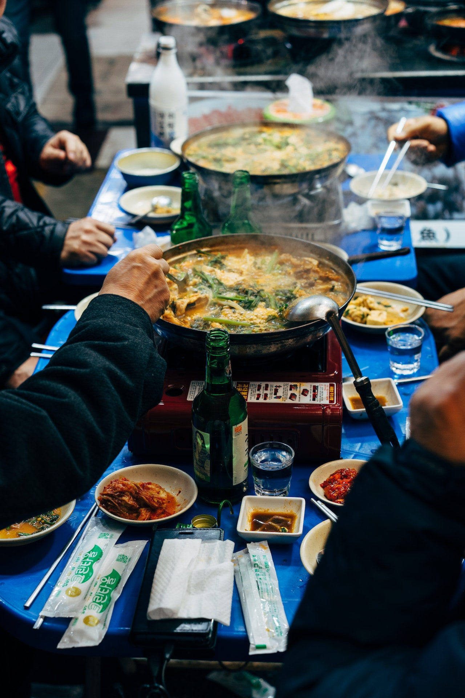
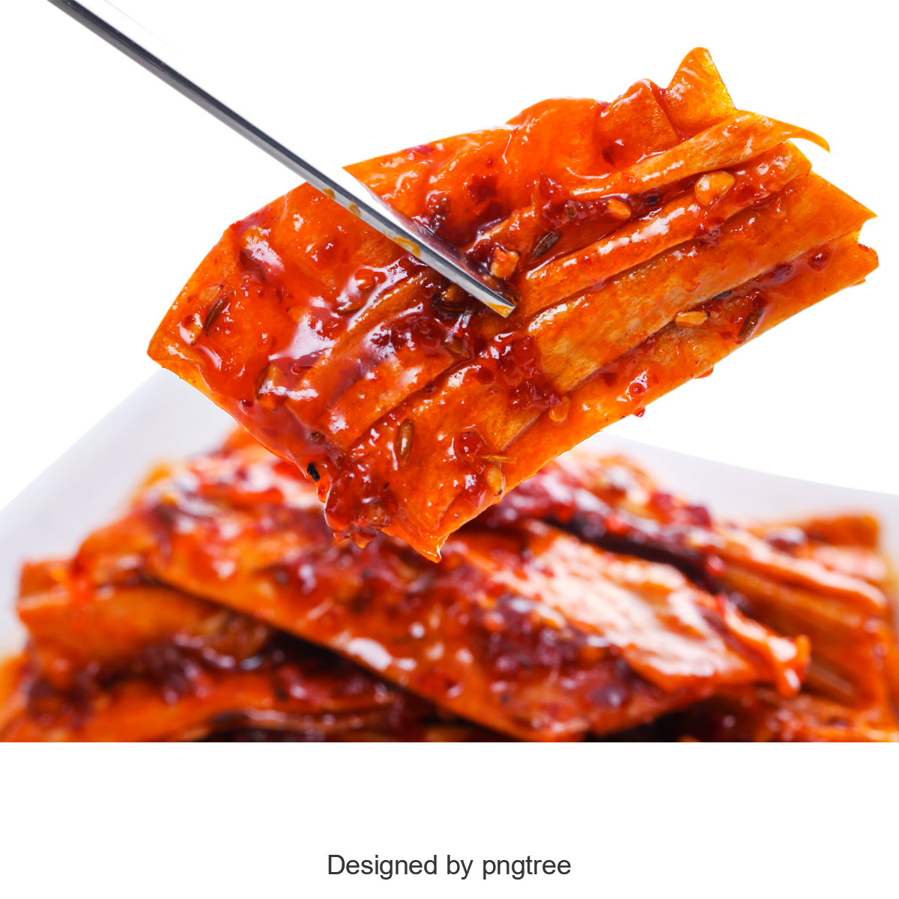
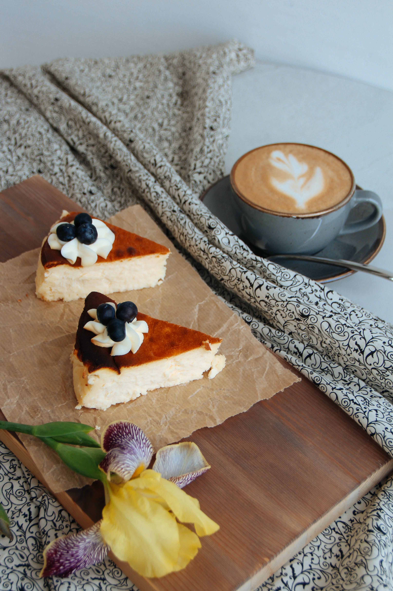

Gastronomia coreana
La comida coreana es una gastronomía muy variada y rica en sabores, que se basa en ingredientes como el
arroz, los fideos, el tofu, las verduras y las carnes. Algunos de los platos más típicos son:
• Kimchi: Es un acompañamiento que consiste en verduras fermentadas con especias, especialmente
el
repollo. Es muy picante y se sirve con casi todas las comidas.
• Bibimbap: Es un plato de arroz mezclado con vegetales, carne y huevo frito o crudo. Se le agrega
una salsa picante llamada gochujang. Es uno de los platos más populares y se puede encontrar en muchos
restaurantes
• Kimbap: Son rollos de arroz envueltos en alga seca, que se rellenan con diferentes ingredientes
como vegetales, carne o pescado. Es una comida rápida y fácil de comer, que se suele vender en la calle o en
tiendas especializadas

• Mandu: Son empanaditas rellenas de verduras y carne, que se pueden cocinar al vapor, fritas o en
sopa. Se pueden comer como aperitivo o plato principal, y se suelen acompañar con una salsa de soja y
vinagre
• Kimchi jjigae: Es un estofado picante de kimchi con tofu, vegetales y carne de vaca, cerdo o atún.
Se sirve caliente en un recipiente de metal, y se come con arroz y otros banchan. Es un plato reconfortante
para los días fríos
• Bulgogi: Es un plato de carne de ternera marinada en una salsa dulce y salada, que se cocina a la
parrilla o al fuego. Se suele servir con lechuga, arroz y otras salsas para envolver la carne y comerla con
las
manos. Es uno de los platos más famosos de la comida coreana
Postres
Hay muchos postres deliciosos en Corea del Sur, pero uno de los más populares es el patbingsu. Se trata de un
postre de hielo raspado con pasta de frijoles rojos, frutas, leche condensada y otros ingredientes dulces.
Es muy refrescante y se suele comer en verano o después de una comida picante.
Otro postre muy popular es el hotteok, que es un panqueque relleno de azúcar morena, nueces y canela. Se
fríe hasta que quede crujiente por fuera y pegajoso por dentro. Se vende en puestos callejeros y se come
caliente
También hay otros postres tradicionales como el yaksik, que es un pastel de arroz dulce con nueces y frutos
secos; el songpyeon, que son empanaditas de arroz rellenas de pasta de frijoles o sésamo; el yeot, que es un
caramelo hecho con arroz glutinoso y batata; y el sikhye, que es una bebida dulce de arroz fermentado